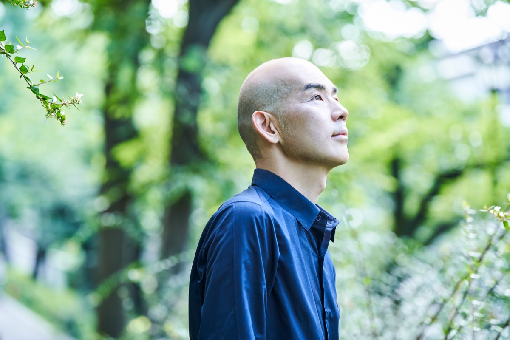
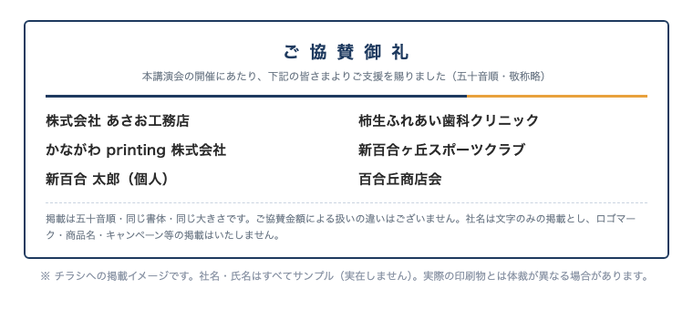

がんの手術で「声が出なくなるかもしれない」と告げられ、そこから38歳で歌に挑戦。2008年、39歳・現役サラリーマンのまま「home」でデビューし、同じ年の紅白歌合戦に出場した木山裕策さんを、麻生区にお招きします。
今年5月22日、川崎市PTA連絡協議会が木山さんの講演会を開きました（後援：川崎市教育委員会・参加費無料）。大変好評でしたが、会場は中原市民館。川崎市全体を対象とした開催で、麻生区から足を運べた方は限られていました。
こうした感想が寄せられた講演を、麻生区にはまだ聞けていない方が大勢います。参加した方からは「もっと多くの人に聞いてほしい」、参加できなかった方からは「足を運ぶことができず聞けなかった」。この声に応え、同じ機会を、麻生区の保護者と地域の皆様が参加できる場所でご用意する——それが本企画です。
企画は、各校の代表である運営委員のみなさんとの対話から生まれました。大人が前向きに生きるきっかけをつくる。その姿が、ひいては子どもたちの健全な育成につながる——それがこの企画に込めた思いです。
| 講師 | 木山 裕策 さん（歌手）／内容：講演＋ミニライブ |
|---|---|
| 日時 | 令和8年12月16日（水）10:00〜11:30（講演60分＋ミニライブ30分） |
| 会場 | 新百合トゥエンティワンホール（新百合ヶ丘駅前） |
| 対象 | 区内PTA会員および地域の皆様に広く公開します |
| 想定参加人数 | 約250名 |
| 参加費 | 無料（ご参加には別途お申し込みが必要です。参加のご案内ページへ） |
| 主催 | 麻生区PTA協議会（区内23校のPTAで構成） |
| 共催 | 麻生区地域教育会議 |
1968年、大阪府生まれ。4人の息子さんの父です。会社員だった2005年、甲状腺がんの手術を受けることになり、「声が出なくなるかもしれない」と告げられました。手術の前夜、挑戦してこなかった人生を悔やんで涙が止まらなかった——その経験から、「子どもたちに最後まであきらめない姿を見せたい」と、38歳でオーディション番組『歌スタ!!』に挑戦します。一度の不合格を経て、2008年、「home」で39歳・現役サラリーマンのままデビューしました。
「home」はオリコン最高7位・配信100万ダウンロードを記録し、日本ゴールドディスク大賞の新人賞を受賞。同年の第59回NHK紅白歌合戦に初出場しました。50歳までの約12年間、会社員と歌手の二足のわらじで活動を続けました。
活動は歌だけではありません。自治体の人権啓発・社会教育の講演会に多数登壇し、学校の芸術鑑賞会プログラムにも常設で登壇。聞いた中学生からは「歌詞の思いが心に響いた」という感想が寄せられています。講演は、ご自身の体験談と歌をあわせた構成です。
当会は、区内23校のPTAからの分担金で運営される任意団体です。成人教育費の今年度予算は7万円。会場費・広報費・講演料などを含めた本企画の費用は、従来の予算だけでは、まかなえません。
ご協賛は一口単位でお受けしております。口数はご自由にお決めいただけます。
口数に上限はありません。口数によらない金額でのご協賛も承ります（申込フォームの口数で「その他」を選び、金額をご入力ください）。
ご協賛者様の席・ご協賛者様紹介・お名前の掲載が不要で、お申し込みなしでご支援くださる場合は、ご寄付のページをご利用ください。
ご協賛いただいた企業・団体を参加者の皆様にご紹介するため、ご希望に応じて「ご協賛者様紹介」として、貴社・貴団体の紹介資料（一企業・団体につき1種類・1枚まで）を当日会場で配布いただけます。ご協賛の対価としての広告ではなく、ご協賛者様をご紹介する趣旨のものです（内容は事前に確認させていただきます）。あわせて、協賛いただいた方には、口数にかかわらず、「ご協賛者様の席」を3席までご用意いたします（ご希望の席数はお申し込み時にお知らせください。この席でご参加の場合、一般の参加申込は不要です）。

| 請求書 | ご希望に応じて発行いたします（お申し込み時にその旨をお知らせください）。当会は適格請求書発行事業者ではないため、インボイス（登録番号）の記載はございません。 |
|---|---|
| 領収書 | ご協賛いただいた皆様に発行し、ご登録のメールアドレス宛にお送りします。ご不要の場合は、申込フォームのご連絡事項欄でお知らせください。（但し書きは「麻生区PTA協議会 教育講演会 協賛金として」といたしますが、別の記載内容をご希望の場合はお申し込み時にお知らせください） |
| お振込先 | JAセレサ川崎（セレサ川崎農業協同組合）新百合ヶ丘支店 普通 2505081（金融機関コード 5123／店舗番号 037） 口座名義：麻生区PTA協議会 会計 田澤 梓（アサオクピーティーエーキョウギカイ カイケイ タザワ アズサ） |
| クレジットカード | カードでのお支払いも承っております。先に申込フォームでお申し込みください。そのうえで、下のお手続きページで、申込フォームでお選びいただいたご協賛額（一口の金額×口数、または「その他」でご入力の金額）をご入力ください。 カードでご協賛のお手続きをする カードでのお支払いは、株式会社 Grow With（当会会長 前村嘉昭が代表を務める会社）が当会に代わってお受けします。カードのご利用明細には、決済サービス「Square」の表示が出ます。お支払いいただいた金額は、カード手数料を同社が補填し、麻生区PTA協議会へ全額そのままお渡しします。当会からの領収書も満額で発行いたします。 |
| お振込期限 | 令和8年11月30日（月）までにお願いいたします。貴社のお支払い時期のご都合がある場合は、ご相談ください。 |
| 振込手数料 | 恐れ入りますが、協賛者様でご負担をお願いいたします。 |
| 税務の扱い | 本協賛は広告等の対価を伴わないご支援として、当会では消費税の不課税取引として扱います。企業側では通常、寄附金としての処理が想定されますが、具体的な会計・税務のお取り扱いは、貴社のご担当者・税理士にご確認ください。なお、当会は任意団体のため、個人の方のご協賛金は寄附金控除（所得控除など）の対象になりません。 |
| 協賛金の取扱い | 本講演会の費用に充てます。開催を延期する場合は延期後の開催に、やむを得ず中止する場合や収支に余剰が出た場合は、次年度の成人教育活動に充てます。 |
| 個人情報 | いただいた個人情報は、本講演会に関するご連絡・収支報告、および（ご希望の場合）チラシ・ホームページ・当日プログラム等へのお名前の掲載に使用し、講演会終了後1年をめどに廃棄します。公開するのは、掲載をご希望された名称のみです。申込フォームには Googleフォーム、カード決済には Square を利用します。 |
フォームからのお申し込みが最も簡単です。
PDFの申込書にご記入のうえ、メール添付・お手渡しでも承ります。
お申し込み・お問い合わせには、48時間以内にご返信いたします。
お申し込みなしで（ご協賛者様の席・ご協賛者様紹介・お名前の掲載はなし）応援したい方は ご寄付のページ（お申し込み不要）へ
子どもたちと保護者、そして地域のための講演会です。何卒お力添えをお願い申し上げます。